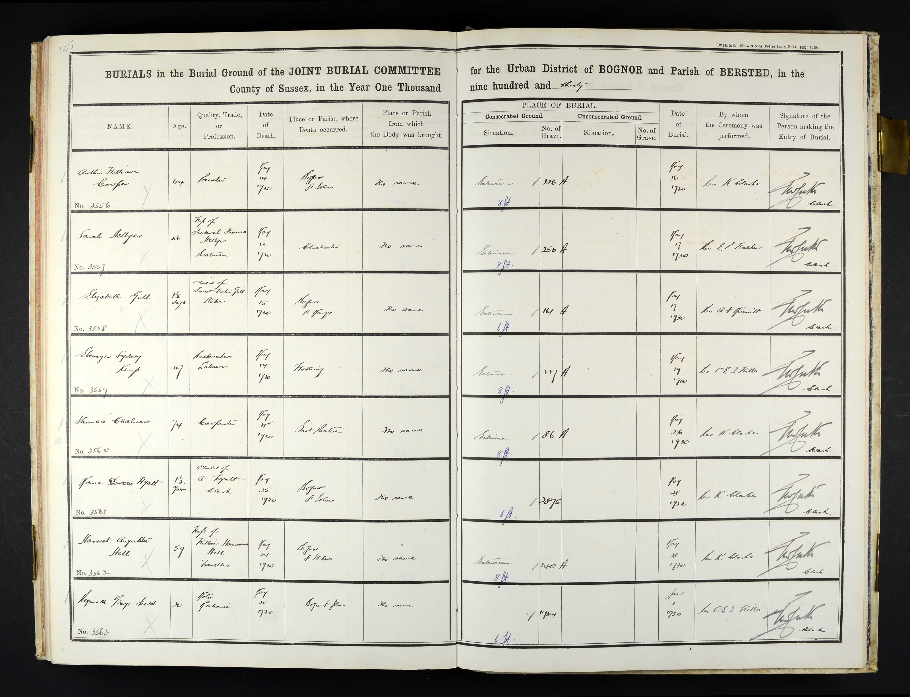
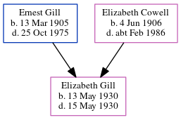

Elizabeth Gill 1930 - 1930
[ Home ] | [ Calendar ] | [ Surnames Index ] | [ Errors ] | [ Family History ]The younger of 2 children of Ernest Gill (a bricklayer) and Elizabeth Cowell (a dressmaker), Elizabeth Gill, the second cousin on the mother's side of Nigel Horne, was born in Bognor Regis, West Sussex, England on 13 May 19301,2,3,4.
She died on 15 May 1930 in Bognor Regis2,5,6 and was buried there at Bognor Regis Cemetery on 17 May 19307.
Parents
- Ernest Victor was born on 13 Mar 1905
- Elizabeth Emma was born on 4 Jun 1906
Citations
- England & Wales births 1837-2006 - Findmypast
- England & Wales deaths 1837-2007 - Findmypast
- Arun District Council; Littlehampton, West Sussex, England; Arun Burial Registers
- Volume: 2B; Page: 513; Line Number: 76; Record set: England & Wales births 1837-2006; Subcategory: Births & baptisms; Category: Birth, Marriage & Death (Parish Registers); Collections from: United Kingdom;
- Arun District Council; Littlehampton, West Sussex, England; Arun Burial Registers Arun District Council; Littlehampton, West Sussex, England; Arun Burial Registers
- Volume: 2B; Page: 459; Line number: 2; Record set: England & Wales deaths 1837-2007; Subcategory: Deaths & burials; Category: Birth, Marriage & Death (Parish Registers); Collections from: United Kingdom; Volume: 2B; Page: 459; Line number: 2; Record set: England & Wales deaths 1837-2007; Subcategory: Deaths & burials; Category: Birth, Marriage & Death (Parish Registers); Collections from: United Kingdom;
- Arun District Council; Littlehampton, West Sussex, England; Arun Burial Registers Arun District Council; Littlehampton, West Sussex, England; Arun Burial Registers
Media
Elizabeth Gill - burial

England & Wales deaths 1837-2007 - BMD/D/1930/2/AZ/000326/002
England & Wales births 1837-2006 - BMD/B/1930/2/AZ/000463/076
Family Tree
Map
Generated by ged2site. Last updated on Jul 3, 2024